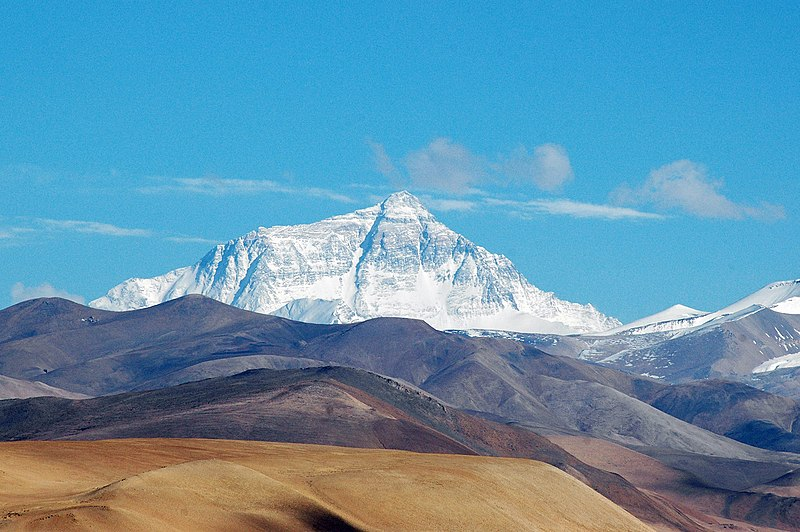
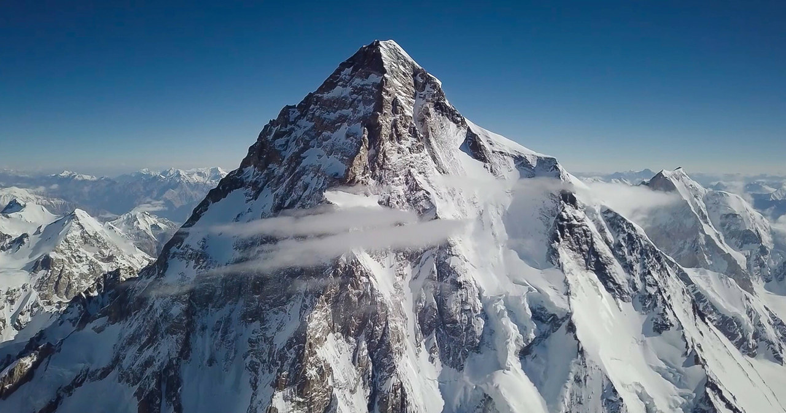

Najwyższe szczyty Azji
Kontynenty


Mount Everest
- Wysokość: 8 488 m
- Kraj: Nepal, Chiny
- Pasmo: Himalaje Wysokie
- Wybitność: 8 488 m
- Pierwsze wejście: 29 maja 1953 – E. Hillary, T. Norgay
- Współrzędne: 27°59′17″N 86°55′31″E
K2
- Wysokość: 8 611 m
- Kraj: Pakistan, Chiny
- Pasmo: Karakorum
- Wybitność: 4 017 m
- Pierwsze wejście: 31 lipca 1954 – A. Compagnoni, L. Lacedelli
- Współrzędne: 35°52′57″N 76°30′48″E